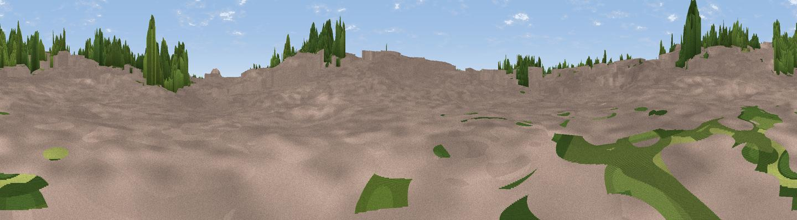

Parson's Nose (Historic)
#46369 in England · top 100% of its area beats it · near Coventry · path 195 mWhere it is
The exact computed spot (SP 33355 79286). Click the marker for map links.
Public access: the nearest public right of way is about 195 m away — the final stretch may cross private land. Computed from Natural England's CRoW access layer and OpenStreetMap rights of way — not the legal definitive map. Always verify locally.
The view, rendered

A 360° render of this exact spot computed from the terrain model, tree cover and land cover — summer colours, afternoon light, calibrated against photographs of famous viewpoints. Real trees, hedges and buildings will differ in detail.
The panorama
Grey silhouette: terrain skyline in each direction (720 bearings, Earth curvature and refraction included). Dashed green: skyline with trees (+15 m) and buildings (+8 m) as obstacles. Blue strip: how far the ground is visible on each bearing.
Where the view opens
Wedge length = distance to the farthest visible ground on that bearing (vegetation-aware). Rings at 10, 25 and 50 km.
What fills the view
86% built-up · 12% woodland · 1% grassland
Angular shares of the visible panorama (visual magnitude), not map area. Landscape diversity 0.19 (0–1 Shannon).
Key numbers
More beautiful places nearby
The staircase of upgrades: each row has a higher view potential than everything closer. Driving times are estimates from straight-line distance, calibrated against real road routing — check an actual route before setting out.
| Place | Direction | Drive | Score |
|---|---|---|---|
| Viewpoint near Daimler Green | NNE · 2 km | ~5 min | 11.8 |
| Viewpoint near Daimler Green | NNW · 4 km | ~8 min | 19.4 |
| Viewpoint near Ash Green | N · 5 km | ~11 min | 20.7 |
| Viewpoint near Bubbenhall | SSE · 7 km | ~14 min | 24.9 |
| Wood End Hill | WNW · 9 km | ~18 min | 33.4 |
| Mount Jud | N · 14 km | ~25 min | 62.4 |
| Viewpoint near Ansley Common | N · 16 km | ~28 min | 69.0 |
| Viewpoint near Northend | SSE · 28 km | ~45 min | 69.7 |
52.41057, -1.51108 · source: osm viewpoint · position refined by local search. Computed location — check access rights before visiting.